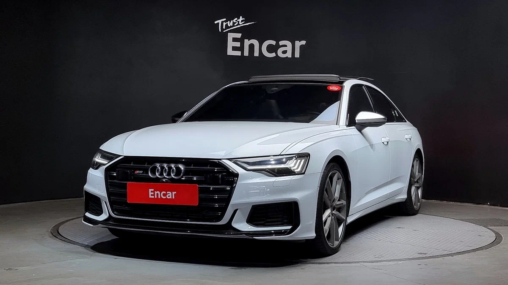
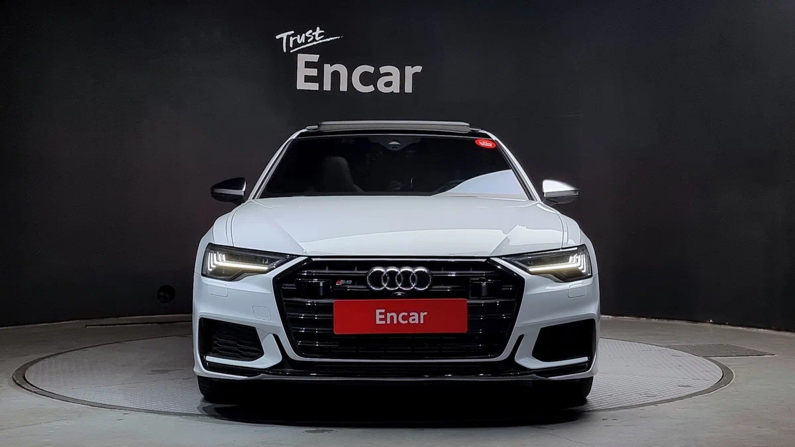
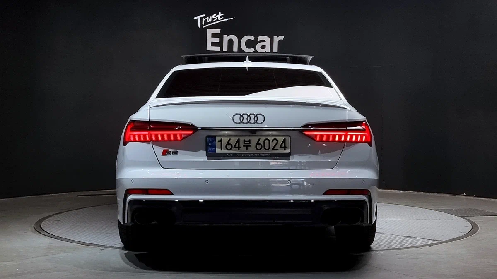

О модели
Audi S6 C8 — это мощный бизнес-седан с турбированным двигателем и спортивным характером.
Характеристики
Двигатель: 2.9L V6 TFSI Twin-Turbo
Мощность: 450 л.с.
Разгон 0-100 км/ч: 4.4 сек
Максимальная скорость: 250 км/ч
Дизайн
Строгий, но агрессивный внешний вид с чёрными акцентами, спортивные элементы интерьера и уникальные 4 выхлопные трубы.
Более подробная информация об этой машине

Нажав по картинке выше, вы можете перейти на сайт и ознакомиться с тем, что не увидели у нас.